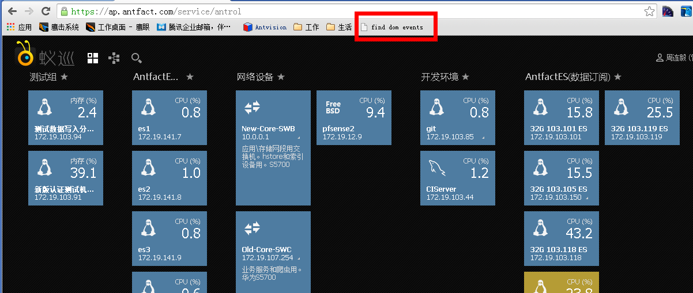

第一步，将页面上的链接添加到书签。
第二步，在ap.antfact.com或者是开发环境内运行书签。
第三步，在控制台运行一下指定的几行脚本（PS：getEventListeners默认在文件中无法访问，是Chrome Dev Tools Command Line Api提供的函数，默认不在window上。手动运行后，该函数会添加到window上）。
第四步，再次运行书签，就能看页面内绑定的事件了，大于1个的绑定事件会打印到控制台上。
第五步，通过不断的运行这个书签，就能发现有问题的事件绑定，通过在函数上右键选择 Show function definition 可以定位到绑定的函数。
在页面放置了一段时间后再次运行，发现有重复绑定的事件，就可以针对具体的情况进行优化了。图中的超过1000个绑定的dom就是有问题的